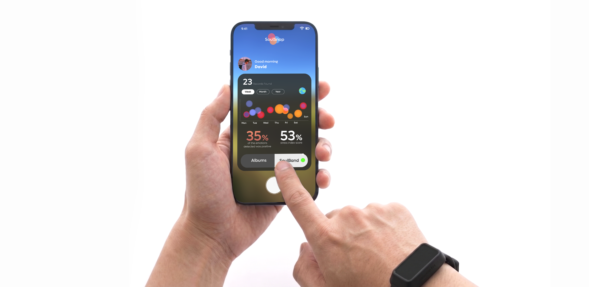
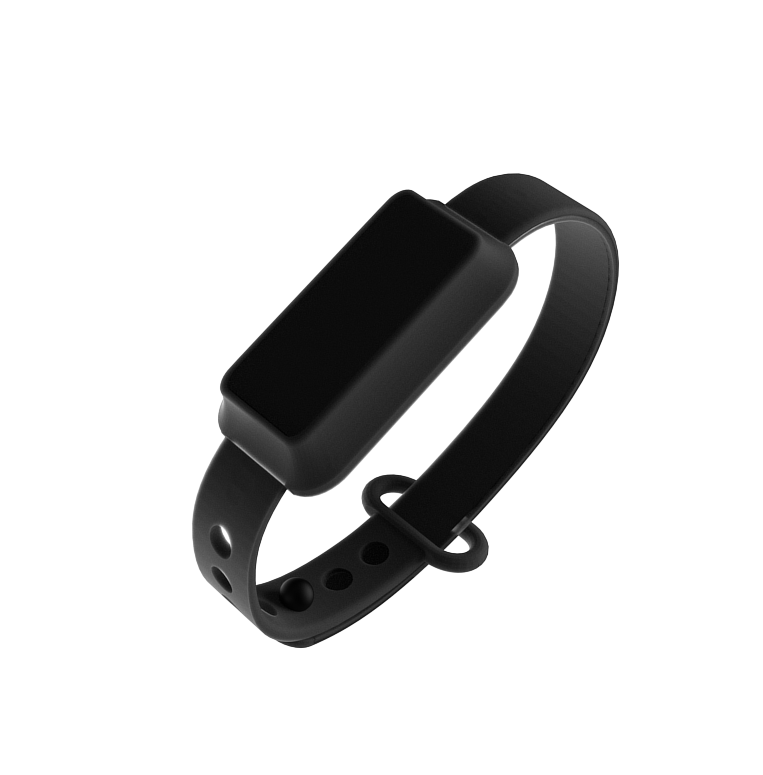

SoulSnap: Emotion Tagged Memories
A photo captures what a moment looked like. It rarely captures what it felt like. SoulSnap pairs photos with the wearer's actual physiological emotion, recorded through a wearable sensor band and turned into a visual tag attached to the memory itself.

We remember what happened. We forget how it felt.
Every photo is a record of a moment that has already changed by the time you look back at it. The scene stays exactly as it was framed. The feeling underneath it fades, gets rewritten, or disappears entirely. SoulSnap is an exploratory thesis project built around one question: what if a photo could carry its original feeling forward, not just its image?


What actually makes a memory stick
Before designing anything, the research asked a simpler question first: how does memory actually work, what makes it stronger, and how are people already trying to hold onto it.
What a photo leaves out
A photo only ever keeps the visual aspect of a moment, what could be seen from behind the lens. Everything else stays invisible: the feelings, the emotions, the senses in play, and the environment, the surrounding, the ambience, even the sound of it. Looking back at a photo later means reconstructing all of that from memory alone, asking the imagination to foster what the image never recorded in the first place.

How people keep memories today
Photo albums, camera rolls, journals, and social captions all do the same basic thing. They store the visual or written surface of a moment. A caption might say "so happy here", but it is written after the fact, filtered through memory and self presentation. None of these methods capture the felt, physiological state of the person living the moment, only their later description of it.
Emotions and senses, intertwined
One conclusion kept surfacing above the rest: emotion and sensation are not two separate channels worth recording apart from each other. Arousal sharpens what the senses pick up, and what the senses register in turn feeds the emotional state itself. They rise and fall together, which is exactly why a physiological signal, not a written caption, is what comes closest to capturing a moment as it was actually felt.

Across all three areas, one pattern kept repeating: memory strength and memory feeling are the same thing. The research question became a design question. What if a memory could be tagged with the actual emotional state a person was in, recorded at the moment it happened, not reconstructed afterward?
What this pointed toward
What the research eventually pointed toward was an app system that tags emotions to different moments of life, each one signifying something unique and special. Through the stimulation of quickly reactivating overlapping representations and the reorganisation of related memories into an integrated network, it encourages linkages between past neutral occurrences (Zhu, 2020).

The research points to long term memories being rich in sensory and perceptual cues, with emotion playing a motivating role in boosting those cues. It is what makes emotion so central to building a memory that lasts.
Tagging memories with the emotion behind them
SoulSnap reads raw physiological data straight off the wearable sensor band, which pairs a GSR sensor and a pulse sensor on the wrist, and visualizes it as circle blobs on a timeline, each one colored to act as visual guidance toward the emotions a person could have been experiencing at that exact moment. The photo shows what the moment looked like. The blob offers a guide to what it may have felt like.


The timeline of blobs shown here is not a literal readout of what was felt. It is guidance, a visual estimate of how the wearer's emotions were likely shifting across that stretch of time.
From raw signal to a visual signature
Following on from the wearable band above, this section walks through how its GSR sensor and pulse sensor readings actually turn into that visual signature. Two sensors, a microcontroller, and a data visualization sketch turn a raw electrical signal into something a person can actually look at and recognize later.
How the emotion score is computed
The score comes from combining two live readings: skin conductance from the GSR sensor, which rises with sympathetic nervous system arousal, and heart rate variability from the pulse sensor. Weighted together, the two produce a single arousal value that the visualization then maps to a blob's color, size, and motion.

This score serves as a guide for users to reflect on the emotions tagged to a memory. It is not a definitive or precise measure of a person's emotional state, but rather a tool to aid self reflection and understanding.
Raw signal reading. Live output straight off the Arduino, reading raw data from the GSR sensor and the pulse sensor.
Consolidating the signal. The raw sensor readings consolidated and converted into the visual plotter, built in p5.js.
Proof of concept. The full pipeline, from measuring the wearer's sweat gland activity and heart rate through to the visual output.
GSR and pulse data are strong signals for arousal, how intense a feeling is, but they cannot reliably tell whether that intensity is positive or negative. A racing heart at a finish line and a racing heart in an argument can look identical on these two sensors alone. Rather than standing in for a precise reading, it serves as a guide, prompting the user to reflect and think back on what they may have actually felt.
Walking through a tagged memory, start to finish
Six steps, from putting on the band to looking back at an old photo months later and feeling something closer to the original moment.
Pairs the hand band
Worn on the wrist, connected to the app, taking a short baseline reading before use.
Captures the moment
Takes a photo in app, or imports one from the camera roll within the active session.
Tags it automatically
Matches the photo's timestamp to the sensor stream and generates its emotion signature.
Builds the memory card
Photo and signature sit together, a visual fingerprint of that specific moment.
Sits on the timeline
Photos arrange by emotional intensity, letting the highs and lows of weeks be scanned at once.
Revisits the memory
Reopening an old photo brings its signature back too, a cue toward how it actually felt.
Always recording in the background
While the hand band is worn, the wearer's biometric data is recorded continuously in the background, whether the app is open or not.
Getting from a rough idea to the interface ahead
The interface shown throughout this case study did not arrive fully formed. It went through several rounds of iteration first, each one testing a different way to surface the emotion data without burying the photo underneath it.
Home screen
An earlier version of the home screen (left) next to the final design (right).

Initial Draft — Concept No. 2
Final UI
- Moved away from the reddish orange palette. A UI leaning red on its own reads as "angry", which works against a tool meant to represent the full range of what a person feels, not just one emotion. A more vibrant, multi hued palette links better to the different emotions actually being tracked.
- Combined the "Albums" and "SoulBand" tabs directly into the same card as the chart, instead of stacking them as separate bars underneath it, cleaning up the overall layout.
- Redesigned the capture button at the bottom, from an open bracket viewfinder icon into a solid circular button, making it read clearly as the primary action on the screen.
Emotion timeline chart
An earlier version of the emotion timeline (left) next to the final design (right).

Initial Draft — Concept No. 2

Final UI
- Enlarged the captured photo to fill the entire screen, instead of the cropped square version used earlier, making it feel more immersive and visually impactful.
- The earlier timeline read top to bottom and leaned on angular wireframe line patterns that felt technical, closer to a schematic than a memory, with an order that read awkwardly.
- The final timeline reads horizontally instead, left to right, matching the direction people naturally read in, which makes it feel visually correct.
- Replaced the wireframe pattern with soft, colored blobs as the visual element, moving the timeline away from looking like a technical schematic and closer to something felt rather than measured.
Emotion map
An earlier version of the emotion map (left) next to the final design (right).

Initial Draft — Concept No. 2

Final UI
- The floating stat card now sits on a clearer, more contrasted surface, so it reads as its own distinct layer sitting above the map, instead of blending into the dark map tone the way the earlier version did.
- Replaced the SoulSnap logo and wordmark inside the card with a plain "Discoveries" label, so the card reads immediately as a data panel rather than a repeated piece of branding the user has already seen on the home screen.
- Added a back arrow and a separate compass badge in the top corners, giving the screen clear navigation and orientation controls that the earlier version left out.
What the journey actually looks like (with the final UI design)


Opening the app to snap a photo captures the moment. The five minutes of biometric data recorded leading up to that shot are then processed into an emotion timeline and tagged directly to the image, visualized on the app as a timeline attached to it.
Tapping the info button. Explains what the visual output actually symbolizes.

Adding a note. The user can also choose to journal down what happened when the photo was taken.
Key decisions
- Recording biometric data passively in the background, rather than asking the wearer to start and stop tracking manually, so tagging never depends on someone remembering to turn it on before the moment has already passed.
- Splitting the flow into capturing first and reviewing second, instead of one long screen, mirrors how the moment is actually lived through, first experienced, only understood afterward.
- Showing the five minute processing window as a visible scrubber, rather than a silent loading spinner, so the wearer can see what the app is doing with their data instead of just waiting on faith.
- Placing the info button directly on the result screen, instead of behind a separate help menu, puts the explanation exactly where curiosity about the blobs is highest.
- Folding the note taking step into the same flow as the tag, rather than a step added later, catches context while the memory is still fresh instead of relying on someone to come back to it.
Looking back at the whole album, not just one photo
Tagging a single moment is only half the idea. The other half is what happens once weeks, months, or years of tagged moments sit next to each other.
An emotion trend, not just a memory
Inside the album, every visualized emotion can be grouped by week, month, or year, turning individual moments into a readable trend. Instead of scrolling through photos one at a time, a person can see the shape of how they have been feeling across a whole stretch of life at a glance.
An emotion map, not just a timeline
The same visualized emotions can also sit on a map, tagged to the location each photo was captured at. Time tells one story about how an emotion changed. Place tells another, surfacing which locations tend to carry which feelings.
Neither view is just a nicer way to browse old photos. Seeing emotion laid out across time and place lets a person reflect on and consolidate their own behavior and thought patterns, noticing shifts and repeats that stay invisible one photo at a time.
Key decisions
- Splitting the trend and the map into two separate views, rather than layering both onto one screen, keeps each one legible on its own instead of competing for the same small space.
- Reusing the same colored blobs from the tagging flow for both the trend chart and the map, so the wearer never has to learn a second visual language just to read their own data back.
- Giving the trend view a week, month, and year toggle, rather than one fixed zoom level, so reflection can happen at whatever distance actually feels useful, a single rough week or a longer stretch of life.
- Keeping the stat card on the map as a compact overlay rather than a full separate screen, so location stays the main thing being looked at, with the numbers supporting it instead of replacing it.
Why tagging emotion actually helps memory
A plain photo asks you to reconstruct a moment mostly from what it looked like. A tagged one gives you a second cue: what it felt like to be there.
Retrieval works best when part of the original encoding context reappears at recall, the encoding specificity principle mentioned in the research. A photo alone only ever reintroduces the visual context. SoulSnap's emotion signature reintroduces a second layer, an abstract trace of the internal, physiological state the person was actually in. Seeing that signature again does not just remind someone what a scene looked like. It nudges the same arousal pathway that made the moment memorable in the first place, the same effect behind a familiar smell or song suddenly making an old memory feel vivid again, translated here into a wearable sensor and a data visualization instead of a scent or a melody.
How It All Connects
The reasoning behind SoulSnap maps in one line: the roles a person plays with their own data lead to specific user stories, which serve a smaller set of underlying values, all pointing toward a single outcome, using emotion data to control, adapt, and create experiences, in service of emotional health and memories that last.
What this project makes possible
Summary
SoulSnap started as a research question about memory and ended as a working bridge between a photo and the body that took it. Research across encoding, memory strength, and current keepsake habits pointed to the same conclusion: memory and emotion are not separate systems, they are the same system. The prototype proves the bridge is buildable with accessible hardware. A GSR sensor and a pulse sensor on a wrist worn band, read by an Arduino, visualized in p5.js, is enough to attach a real physiological trace to a photo at the moment it is taken, rather than relying on a caption written after the feeling has already faded.
What Comes Next
- Valence, not just arousal: adding signals like facial expression or a light self report tag, so signatures can move beyond intensity toward genuine positive or negative emotion.
- A wearable, not a prototype: moving from the current hand band toward a form factor someone would actually wear through an ordinary day.
- Personalized calibration: adjusting the arousal to color mapping against each wearer's own baseline, since resting GSR and heart rate vary enough between people that a shared scale might read two very different states as the same signature.
- Pattern surfacing across views: cross referencing the trend chart and the map automatically, so the app can point out on its own that a certain location tends to carry a certain feeling, instead of leaving that comparison entirely up to the person.